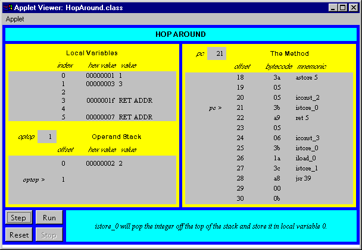

Any use of this Beta Book is subject to the rules stated in the Terms of Use.
| © 1997 The McGraw-Hill Companies, Inc. All rights reserved. Any use of this Beta Book is subject to the rules stated in the Terms of Use. | |
This chapter describes the way finally clauses are implemented in bytecodes. It describes the relevant instructions and shows how they are used. The chapter also describes some surprising behaviors exhibited by finally clauses in Java source code and explains this behavior at the bytecode level.
Accompanying this chapter on the CD-ROM is an applet that interactively illustrates the material presented in the chapter. The applet, named Hop Around, simulates the Java Virtual Machine executing a method that includes finally clauses. At the end of this chapter, you will find a description of this applet and the bytecodes it executes.
Miniature Subroutines
In bytecodes, finally clauses act as "miniature subroutines" within a method. The subroutine for a finally clause is "invoked" at each exit point inside a try block and its associated catch. After the finally clause completes--as long as it completes by executing past the last statement in the finally clause, not by throwing an exception or executing a return, continue, or break--the miniature subroutine itself "returns." Execution continues just past the point where the miniature subroutine was called in the first place.
The opcode that causes a Java Virtual Machine to jump to a miniature subroutine is the jsr instruction. The jsr opcode takes a two-byte operand, the 16-bit signed offset from the location of the jsr instruction where the miniature subroutine begins. A second variant of the jsr instruction is jsr_w, which performs the same function as jsr but takes a wide (four-byte) operand. When the Java Virtual Machine encounters a jsr or jsr_w instruction, it pushes a return address onto the stack, then continues execution at the start of the miniature subroutine. The return address is the address (an offset or native pointer) of the bytecode immediately following the jsr or jsr_w opcode and its operands. The type of the address is returnAddress.
After a miniature subroutine completes, it invokes the ret instruction, which returns from the subroutine. The ret instruction takes one operand, an index into the local variables where the return address is stored. The opcodes that deal with finally clauses are summarized in Table 18-1:
Table 18-1. Finally clauses
| Opcode | Operand(s) | Description |
| jsr | branchbyte1, branchbyte2 | pushes the return address, branches to offset |
| jsr_w | branchbyte1, branchbyte2, branchbyte3, branchbyte4 | pushes the return address, branches to wide offset |
| ret | index | returns to the address stored in local variable index |
| wide | ret, indexbyte1, indexbyte2 | returns to the address stored in local variable index |
Don't confuse a miniature subroutine with a Java method. Java methods use a different set of instructions. Instructions such as invokevirtual or invokespecial cause a Java method to be invoked, and instructions such as return, areturn, or ireturn cause a Java method to return. The jsr instruction does not cause a Java method to be invoked. It merely causes a jump to a different opcode within the same method. Likewise, the ret instruction doesn't return from a method. It just causes the virtual machine to jump back to the opcode in the same method that immediately follows the calling jsr opcode and its operands. In this book, the bytecodes that implement a finally clause are called a "miniature subroutine" because they act like a small subroutine within the bytecode stream of a single method.
Asymmetrical Invocation and Return
You might think that the ret instruction should pop the return address off the stack, because that is where it was pushed by the jsr instruction. But it doesn't. At the start of each subroutine, the return address is popped off the top of the stack and stored in a local variable--the same local variable from which the ret instruction later gets it. This asymmetrical manner of working with the return address is necessary because finally clauses (and therefore, miniature subroutines) themselves can throw exceptions or include return, break, or continue statements. Because of this possibility, the extra return address that was pushed onto the stack by the jsr instruction must be removed from the stack right away, so it won't still be there if the finally clause exits with a break, continue, return, or thrown exception.
As an illustration, consider the following code, which includes a finally clause that exits with a break statement. The result of this code is that, irrespective of the parameter bVal passed to method surpriseTheProgrammer(), the method returns false:
begin
// On CD-ROM in file opcodes/ex3/Surprise.javaclass Surprise {
static boolean surpriseTheProgrammer(boolean bVal) {
while (bVal) {
try {
return true;
}
finally {
break;
}
}
return false;
}
}
end
The example above shows why the return address must be stored into a local variable at the beginning of the finally clause. Because the finally clause exits with a break, it never executes the ret instruction. As a result, the Java Virtual Machine never goes back to finish up the "return true" statement. Instead, it just goes ahead with the break and drops down past the closing curly brace of the while statement. The next statement is "return false," which is precisely what the Java Virtual Machine does.
The behavior shown by this finally clause, which exits with a break, is also shown by finally clauses that exit with a return or continue, or by throwing an exception. In any of these cases, the ret instruction at the end of the finally clause is never executed. Because the ret instruction is not guaranteed to be executed, it can't be relied on to remove the return address from the stack. Therefore, the return address is stored into a local variable at the beginning of the finally clause's miniature subroutine.
For a complete example of a finally clause, consider the following method, which contains a try block with two exit points. In this example, both exit points are return statements:
begin
// On CD-ROM in file opcodes/ex1/Nostalgia.javaclass Nostalgia {
static int giveMeThatOldFashionedBoolean(boolean bVal) {
try {
if (bVal) {
return 1;
}
return 0;
}
finally {
System.out.println("Got old fashioned.");
}
}
}
end
The giveMeThatOldFashionedBoolean() method compiles to the following bytecodes:
begin
// The bytecode sequence for the try block:0 iload_0 // Push local variable 0 (bval parameter)
1 ifeq 11 // Pop int, if equal to 0, jump to 11 (just past
// the if statement): if (bval) {}
4 iconst_1 // Push int 1
5 istore_1 // Pop an int (the 1), store into local variable 1
6 jsr 24 // Jump to the mini-subroutine for the finally clause
9 iload_1 // Push local variable 1 (the 1)
10 ireturn // Return int on top of the stack (the 1): return 1;
11 iconst_0 // Push int 0
12 istore_1 // Pop an int (the 0), store into local variable 1
13 jsr 24 // Jump to the mini-subroutine for the finally clause
16 iload_1 // Push local variable 1 (the 0)
17 ireturn // Return int on top of the stack (the 0): return 0;
// The bytecode sequence for a catch clause that catches any kind
// of exception thrown from within the try block.
18 astore_2 // Pop the reference to the thrown exception, store
// into local variable 2
19 jsr 24 // Jump to the mini-subroutine for the finally clause
22 aload_2 // Push the reference (to the thrown exception) from
// local variable 2
23 athrow // Rethrow the same exception
// The miniature subroutine that implements the finally block.
24 astore_3 // Pop the return address, store it in local variable 3
25 getstatic #7 <Field java.io.PrintStream out
// Get a reference to java.lang.System.out
28 ldc #1 <String "Got old fashioned."
// Push reference to "Got old fashioned." String from
// the constant pool
30 invokevirtual #8 <Method void println(java.lang.String)
// Invoke System.out.println()
33 ret 3 // Return to return address stored in local variable 3
end
The bytecodes for the try block include two jsr instructions. Another jsr instruction is contained in the catch clause. The catch clause is added by the compiler because if an exception is thrown during the execution of the try block, the finally block must still be executed. Therefore, the catch clause merely invokes the miniature subroutine that represents the finally clause, then throws the same exception again. The exception table for the giveMeThatOldFashionedBoolean() method, shown below, indicates that any exception thrown between and including addresses 0 and 17 (all the bytecodes that implement the try block) are handled by the catch clause that starts at address 18.
begin
Exception table:from to target type
0 18 18 any
end
The bytecodes of the finally clause begin by popping the return address off the stack and storing it into local variable three. At the end of the finally clause, the ret instruction takes its return address from the proper place, local variable three.
Hop Around: A Simulation
The Hop Around applet, shown in Figure 18-1, demonstrates a Java Virtual Machine executing a sequence of bytecodes. The applet is embedded in a web page on the CD-ROM in file applets/HopAround.html. The bytecode sequence in the simulation was generated by the javac compiler for the hopAround() method of the class shown below:
begin
// On CD-ROM in file opcodes/ex1/Clown.javaclass Clown {
static int hopAround() {
int i = 0;
while (true) {
try {
try {
i = 1;
}
finally { // The first finally clause
i = 2;
}
i = 3;
// This return never completes, because of
// the continue in the second finally clause
return i;
}
finally { // The second finally clause
if (i == 3) {
// This continue overrides the return statement
continue;
}
}
}
}
}
end
The bytecodes generated by javac for the hopAround() method are shown below:
begin
0 iconst_0 // Push constant 01 istore_0 // Pop into local var 0: int i = 0;
// Both try blocks start here (see exception table, below):
2 iconst_1 // Push constant 1
3 istore_0 // Pop into local var 0: i = 1;
4 jsr 18 // Jump to mini-subroutine at offset 18 (the
// first finally clause)
7 goto 24 // Jump to offset 24 (to just below first
// finally clause)
// Catch clause for the first finally clause:
10 astore 4 // Pop the reference to thrown exception, store
// in local variable 4
12 jsr 18 // Jump to mini-subroutine at offset 18 (the
// first finally clause)
15 aload 4 // Push the reference (to thrown exception)
// from local variable 4
17 athrow // Rethrow the same exception
// The first finally clause:
18 astore 5 // Store the return address in local variable 5
20 iconst_2 // Push constant 2
21 istore_0 // Pop into local var 0: i = 2;
22 ret 5 // Jump to return address stored in local variable 5
// Bytecodes for the code just after the first finally clause:
24 iconst_3 // Push constant 3
25 istore_0 // Pop into local var 0: int i = 3;
// Bytecodes for the return statment:
26 iload_0 // Push the int from local
// variable 0 (i, which is 3)
27 istore_1 // Pop and store the int into local
// variable 1 (the return value, i)
28 jsr 39 // Jump to mini-subroutine at offset 39 (the
// second finally clause)
31 iload_1 // Push the int from local variable 1 (the
// return value)
32 ireturn // Return the int on the top of the stack
// Catch clause for the second finally clause:
33 astore_2 // Pop the reference to thrown exception, store
// in local variable 2
34 jsr 39 // Jump to mini-subroutine at offset 39 (the
// second finally clause)
37 aload_2 // Push the reference (to thrown exception)
// from local variable 2
38 athrow // Rethrow the same exception
// The second finally clause:
39 astore_3 // Store the return address in local variable 3
40 iload_0 // Push the int from local variable 0 (i)
41 iconst_3 // Push constant 3
42 if_icmpeq 47 // If the top two ints on the stack are equal, jump
// to offset 47: if (i == 3) {
45 ret 3 // Jump to return address stored in local variable 3
47 goto 2 // Jump to offset 2 (the top of the while
// block): continue;
Exception table:
from to target type
2 4 10 any
2 31 31 any
end
The hopAround() method returns from the first finally clause by executing past the closing curly brace, but returns from the second finally clause by executing a continue statement. The first finally clause, therefore, exits via its ret instruction. But because the second finally clause exits via a continue, its ret instruction is never executed. The continue statement causes the Java Virtual Machine to jump to the top of the while loop again. This results in an endless loop, even though it is a return statement that originally causes the second finally clause to be executed in the first place. The continue statement in the finally clause supersedes the return statement, so the method never returns.
Note that the bytecodes that implement the return statement store a copy of the return value into local variable one before jumping to the miniature subroutine that represents the second finally clause. Then, after the miniature subroutine returns (in this case it never does, because the continue is always executed), the return value is retrieved from local variable one and returned.
This highlights the way the Java Virtual Machine returns values when finally clauses are also executed. Rather than returning the value of i after the finally clause is executed, the Java Virtual Machine will return the value that i had just before the finally clause was executed. This means that even if the finally clause changes the value of i, the method will still return the value that i had when the return statement was first reached, before the finally clause was invoked. If you wanted the finally clause to be able to change the return value of the method, you would have to put an actual return statement with the new return value into the finally clause itself.
To drive the Hop Around simulation, use the Step, Reset, Run, and Stop buttons. Each time you press the Step button, the simulator will execute the instruction pointed to by the pc register. If you press the Run button, the simulation will continue with no further coaxing on your part until you press the Stop button. To start the simulation over, press the Reset button. For each step of the simulation, a panel at the bottom of the applet contains an explanation of what the next instruction will do. Happy clicking.

On the CD-ROM
The CD-ROM contains the source code examples from this chapter in the opcodes directory. The Hop Around applet is contained in a web page on the CD-ROM in file applets/HopAround.html. The source code for this applet is found alongside its class files, in the applets/JVMSimulators and applets/JVMSimulators/COM/artima/jvmsim directories.
The Resources Page
For more information about the material presented in this chapter, visit the resources page: http://www.artima.com/insidejvm/finally.html.
COMPUTING MCGRAW-HILL | Beta Books | Contact Us | Order Information | Online Catalog
Computing McGraw-Hill is an imprint of the McGraw-Hill Professional Book Group.